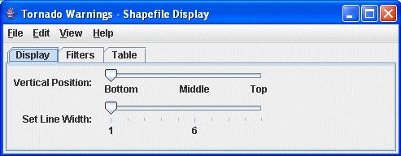
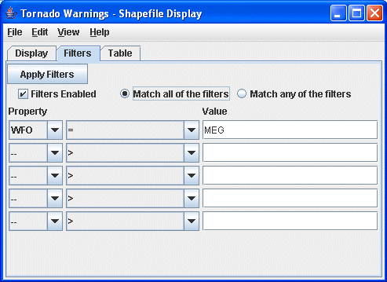
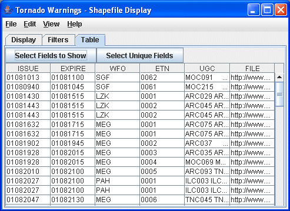

Overview
McIDAS-V supports the ability to load and display GIS shapefiles. You can select
and load a shape file (i.e., a file that ends with .shp) from the General->Files/Directories chooser in the Data Sources tab of the Data Explorer using the Shapefile Data Type.
The zipped (.zip) version of shapefiles can also be loaded.

Image 1: Display Tab of the Shapefile Display Properties Dialog
Properties
- Vertical Position - Defines the vertical position of the data in the Main Display window. This can be changed by using the slider or typing a value into the field.
- Set Line Width - Changes the width of the lines in the display.
For shapefiles that also have a data base file (.dbf) you can control what shape
segments are shown with the Filters tab.
Note: McIDAS-V supports a simple XML format for maps. The Shapefile Control
can export the displayed shapes in this XML format the File->Save->Export
Displayed Shapes... menu.

Image 2: Filters Tab of the Shapefile Display Properties Dialog
Properties
- - Applies one or more filters to the current shape
file display.
- Filters Enabled - Enables filters to be applied to the data in the Main Display window.
- Match all of the filters - Displays only data that corresponds with every filter entered.
- Match any of the filters - Displays any data that matches up with one or more of the filters entered.
- Property - Represents the variable or property that you want to filter.
- Middle Dropdown Menu - Represents the mathematical symbol that determines your filter. This can be Greater Than, Less Than, Equal To, Not Equal To, etc.
- Value - Represents the value that sets the filter.
When the shapefile has an associated data base file (.dbf) a tabular listing
of the attributes is shown in the Table tab. Use
the Select Fields to Show button to select what fields
to show. The table can be exported as a CSV file with the File->Save->Export
Table... menu.

Image 3: Table Tab of the Shapefile Display Properties Dialog
Properties
- - Opens a box which allows you to add, remove, and organize
the list of fields to show.
- - Opens a box which allows you to add, remove, and organize
the list of unique fields to show.
Menus
Many of the menu items seen utilizing this display are standard options that can be found in the Menus section of the Layer Controls page. However, there is one option that is unique to this display.
The Edit menu has this unique option:
- Line Color - Changes the color of the lines plotted in the Main Display window.